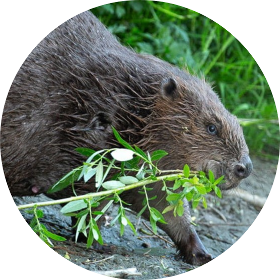

Castorul eurasiatic
Castorul european este o specie de rozătoare care se găsește în râurile și lacurile Moldovei. Este o specie vulnerabilă din cauza vânătorii și pierderii habitatului.
Castorul european este o specie de rozătoare care se găsește în râurile și lacurile Moldovei. Este o specie vulnerabilă din cauza vânătorii și pierderii habitatului.
Un șarpe veninos cu o lungime de până la 70 de cm. Corpul viperei de stepă este acoperit cu solzi gri-maronii, cu un model în zig-zag distinct pe spate. Capul este lat, distinct de gât, iar ochii au pupile eliptice.
Dropia se găsește în Moldova doar în stepele Bălțiului, unde preferă zonele cu vegetație joasă. Dieta sa constă în principal din plante erbacee, insecte și nevertebrate mici.
Un vultur mare, majestic, cu o anvergură a aripilor de până la 2,5 metri. Penajul este în cea mai mare parte maro închis, cu o coadă albă distinctă. Vulturul codalb are un cioc puternic, galben-portocaliu și gheare ascuțite pentru a vâna prada.